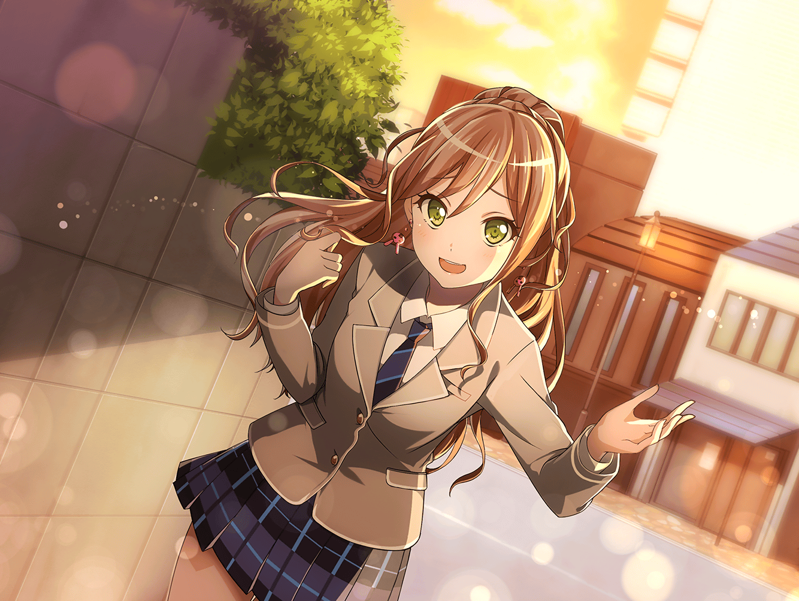

数日後
羽丘女子学園 校門前
あこ
あ。友希那さん！
……とリサ姉！ 今日も練習よろしくですっ！
リサ
お、あこ。なんか日課になってきたね。
あこの顔、見ない日ないな〜
あこ
ダンス部も一緒だしねっ。
一緒に踊って、演奏して、友希那さんの歌の力になるっ
リサ
ちょっとちょっと、
アタシ達バンドでは踊らないよ？
ま、スタジオ行こっかー☆
友希那
私は先に行くわ
リサ
ええ？ 先もなにも、行き先一緒じゃん！
……って、もう、友希那！
追いかけよっ、あこ！
あこ
うんっ！
友希那さん待ったっ！ とーせんぼっ
友希那
……どいて
リサ
……ってやり過ぎちゃったか〜。ごめんごめん！
行くとこ一緒なんだから、
並んで歩くくらいいいでしょ？
あこ
そうですっ。いーでしょ？
友希那
……はぁ。わかったわ。なら少し、静かにしていて
リサ・あこ
やった！ いえーいっ！！
友希那
……あなた達を加入させたのは、早計だったかも……
あこ
……ってあれ！？ リサ姉その指どうしたの？
ネイル……全部はがしちゃってボロボロ……？

友希那
！！
リサ
えっ。い、いや〜……これは……その……ほ、ほら？
なんかネイルするだけがギャルじゃないし？ 爪から
シフトチェンジってゆーの？ イメチェンイメチェン！
あこ
でも……リサ姉……もしかしてベース弾くのに……
リサ
そんなことよりさっ、あこ！
練習終わったらクレープ食べない？
あの、裏通りにできたやつ♪
あこ
クレープっ！！
知ってる知ってる、いっつも混んでるとこだよねっ！
友希那
……リサ。
ネイルをとるのは正しいわ。
でもペースは守らないと、指を壊して……
リサ
わかってるってば〜☆
友希那も一緒に、って行かないかぁ〜あはは。
アタシ生クリーム増し増しでいこっと！
友希那
……リサ……

スタジオ
友希那
あこ。今少し遅れた
あこ
……っ！ はいっ！
紗夜
今井さん、宇田川さんのテンポをもっと意識
リサ
……りょうかいっ！

練習後
リサ・あこ
はぁーーーっ。疲れた
紗夜
みなさん、少しいいですか。
オリジナル曲がまとまってきたので、
課題曲を増やそうと思います。この辺りの曲で……
友希那
バンドの底上げには最適なリストだと思うわ。
来週までに全員練習してくること
リサ・あこ
ク……クレープ……

宇田川家 リビング
あこ
ただいまぁ〜〜。
……！ おねーちゃん！！ 今から出かけるの？
巴
ああ。ちょっと商店街の仲間に呼ばれてさ。あこも来るか？
あこ
行きたいっ！ ……けどぉ……あこ、くたくたなんだよぉ〜。
おねーちゃんと行きたい……でもくたくた……
うう……悲しい今度にする……
巴
ははは。よしよし。
あの湊さんとバンド組んだんだもんな。
ライブ、観に行くから。決まったらすぐ教えろよ
あこ
うんっ！ おねーちゃん大好き！
巴
アタシもあこが大好きだよ。
ドラムも負けないようにしないとな。じゃ、いってくる
あこ
いってらっしゃい！ またドラム教えてねっ！

白金家 燐子の部屋
あこのチャット
『って感じで、まだちょっと怒られはするけど、
認められるようになってきた！』
燐子のチャット
『バンドとして息が合ってきたんだね。
あこちゃんのドラムも、
どんどんうまくなってるんじゃないかな』
あこのチャット
『ふ……これくらい造作もないことよ！』
燐子
……ふふ。
……最近バンドの話一色……本当に、楽しいんだ……
あこのチャット
『では特別に、我が同朋、りんりんにだけ、
演奏中のバンドを見せてしんぜよう』
燐子
え？ 動画……？ あ、開いた……
燐子
……すごい。あこちゃんが、友希那さんと……
燐子のチャット
『ありがとう。すごいね！
全員でひとつの音楽を作り上げてる。
みんなでって、こういうことなんだね！
あこのチャット
『………』
燐子
……あれ？
燐子のチャット
『あこちゃん？』
あこのチャット
『——応答なし——』
あこ
ぐ〜〜〜〜……
むにゃむにゃ……
燐子
あこちゃんが、
自分からチャット落ちるなんて、初めて……
何か、あったのかな……
燐子
（それにしても、この動画……
……なんだか、身体が引き寄せられる感じがする……)
燐子
……たとえば……もし……
燐子
（もし……本当にあくまで、もし仮にだけれど……
……私のピアノを、あこちゃんのドラムのように、
友希那さんたちの演奏に重ねたら）
燐子
……どう……なるんだろう
燐子
（……そう。たとえば、
動画に合わせてピアノを少しだけ……
少しだけ……弾いてみたら……）
燐子
…………
…………！！
燐子
（……なに……これ……
わたし……ずっと前から、こうやってたみたいに……）
燐子
（……すごく……楽しい……！）